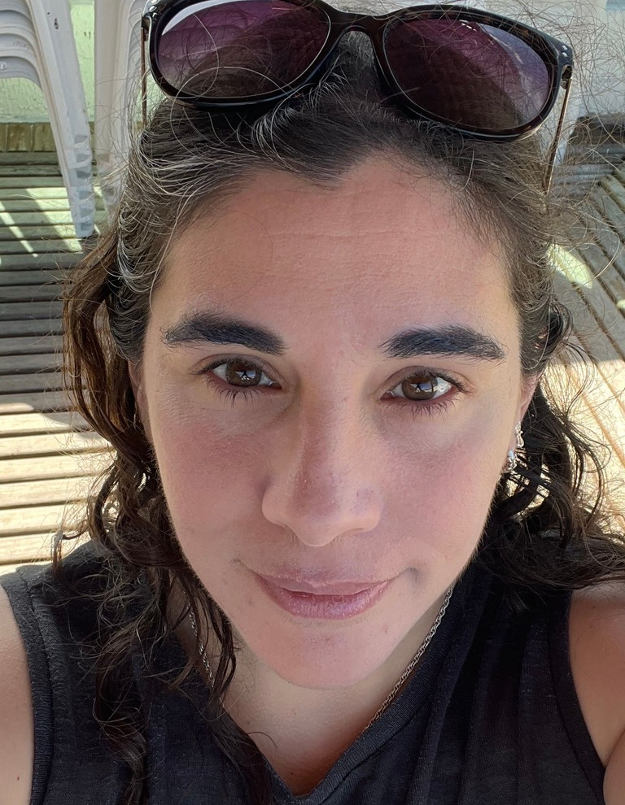
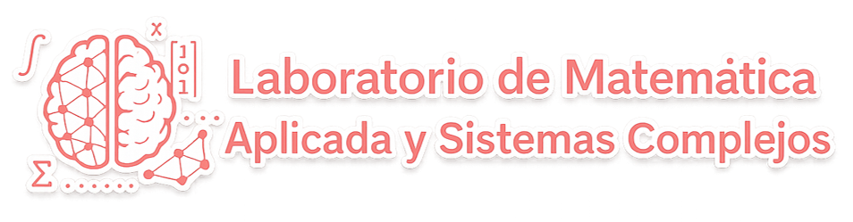
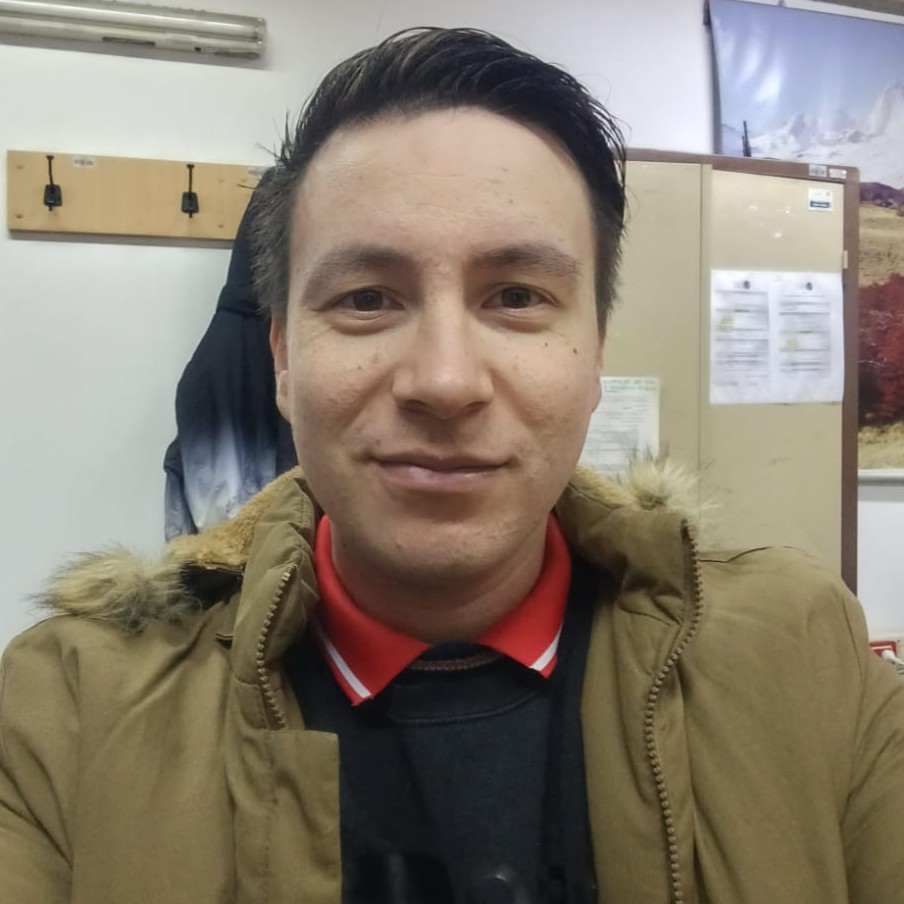
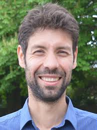
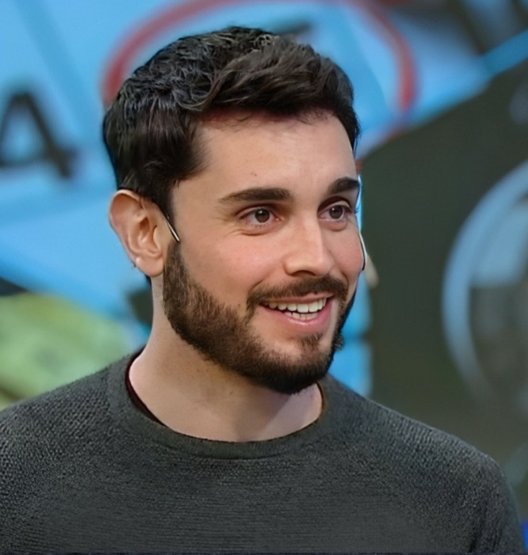

Líneas de Investigación Research Lines
- Modelado computacional de procesos cognitivos usando redes neuronales recurrentes (RNN), con énfasis en representaciones temporales, toma de decisiones, arquitecturas con restricciones biológicas y propiedades dinámicas/espectrales. Computational modelling of cognitive processes using recurrent neural networks (RNNs), with emphasis on temporal representations, decision-making, biologically constrained architectures, and dynamical/spectral properties.
- Desarrollo de enfoques de machine learning para el análisis de datos de neuroimagen (EEG, MEG y fMRI), incluyendo predicción de edad cerebral, caracterización de rasgos individuales e identificación de biomarcadores asociados al envejecimiento y síntomas neuropsiquiátricos. Development of machine learning approaches for the analysis of neuroimaging data (EEG, MEG, and fMRI), including brain age prediction, characterisation of individual traits, and identification of biomarkers associated with ageing and neuropsychiatric symptoms.
- Análisis de grandes conjuntos de datos abiertos de neurociencia para caracterizar la variabilidad interindividual, procesos cognitivos y envejecimiento saludable mediante metodologías de aprendizaje estadístico y data-driven. Analysis of large open neuroscience datasets to characterise inter-individual variability, cognitive processes, and healthy ageing using data-driven and statistical learning methodologies.
- Investigación de la conectividad cerebral funcional, resiliencia de redes y mecanismos de recuperación en pacientes con ACV mediante análisis de neuroimagen y conectividad a gran escala. Investigation of functional brain connectivity, network resilience, and recovery mechanisms in stroke patients through large-scale neuroimaging and connectivity analyses.
- Desarrollo de herramientas reproducibles de machine learning, pipelines abiertos y conjuntos de datos digitales para investigación en sistemas complejos, incluyendo aplicaciones en neurociencia y análisis de datos paleontológicos mediante deep learning y construcción de atlas digitales. Development of reproducible machine learning tools, open pipelines, and digital datasets for complex systems research, including applications to neuroscience and paleontological data analysis through deep learning and digital atlas construction.
Integrantes Team Members

Zacarías Torres
Estudiante de Posgrado Graduate Student
Colaboradores Externos External Collaborators

Diego Vidaurre
Colaborador Externo External Collaborator
Perfil Aarhus University Aarhus University Profile
ED
Elisabeth Dirren
Colaboradora Externa External Collaborator
Perfil Universidad de Ginebra University of Geneva ProfilePublicaciones Recientes Recent Publications
2026
El exposoma del envejecimiento cerebral en 34 países The exposome of brain aging across 34 countries
2025
Dinámicas Parametrizadas por Tarea: Representación del Tiempo y Decisiones en Redes Neuronales Recurrentes Task-Parametrized Dynamics: Representation of Time and Decisions in Recurrent Neural Networks
Desinteligencia Artificial: cuando delegar tu pensamiento a ChatGPT es como usar el gps para ir al baño Artificial Unintelligence: when delegating your thinking to ChatGPT is like using GPS to go to the bathroom
Determinantes de la resiliencia de la red cerebral después de un ACV Determinants of brain network resilience after stroke
2024
Predicción de rasgos del sujeto a partir de firmas espectrales cerebrales: una aplicación al envejecimiento cerebral Predicting subject traits from brain spectral signatures: an application to brain ageing
Explorando memorias Flip Flop y más allá: entrenamiento de Redes Neuronales Recurrentes con ideas clave Exploring Flip Flop memories and beyond: training Recurrent Neural Networks with key insights
Contacto Contact
Para contactarnos: To contact us:
cecial.jarne@unq.edu.ar